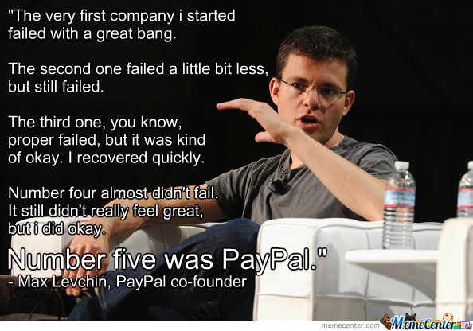
Faz um tempo que não escrevo por aqui. Hoje resolvi escrever a respeito de um assunto que tirou o meu sono durante algumas noites.
O motivo é simples. “PayPal is a mess.” disse um comentário perdido de 2014 no blog deles. E é uma bagunça mesmo.
Só quem já precisou trabalhar com este gateway sabe como a documentação deles é estranha.
Atualmente, o PayPal tem 2 métodos de integração: (a) Clássico ou (b) REST API.
Nós iremos abordar aqui o segundo método, através da REST API deles.
Por que a REST e não a Clássica? R: A Clássica é uma bosta para configurarmos o retorno automático, para fazer as coisas funcionarem você não tem uma biblioteca padrão suportada pelo PayPal e a qualquer momento este método será abandonado.
Para quem já fez integração com eles alguma vez, sabe que existe o Express Checkout, o IPN (Instant Payment Notification), entre outros.
Então, não usaremos nada disto, hehe. >:)
Tópicos do nosso papo de hoje:
- ** ** (estamos aqui)
- Tokens de Acesso (OAuth)
- Instalando SDK (Composer)
- Definindo nossos modelos de cobrança (Billing Plans)
- Criando um acordo para nosso usuário (Billing Agreements)
- Notificações Automáticas (Webhooks)
- Saindo de Sandbox para o mundo (Environments)
“Talk is cheap, show me the code!“
Antes de qualquer coisa, iremos precisar de…
Tokens de Acesso
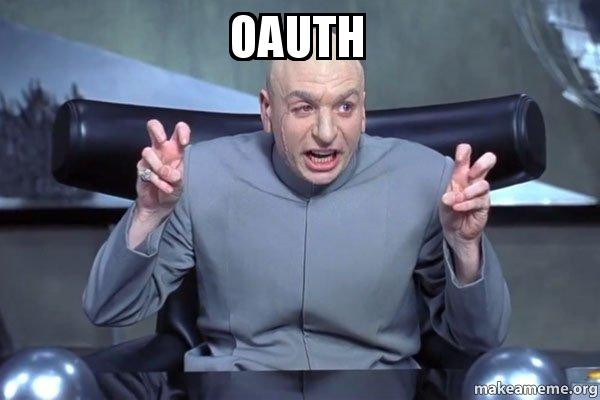
1) Acesse https://developer.paypal.com/ 2) Faça Login, depois clique em Dashboard 3) Em “REST API apps”, clique em Create App
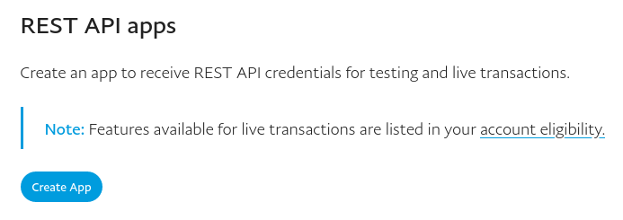
4) Insira um nome em App Name, guarde o Sandbox developer account. Clique em Create App.
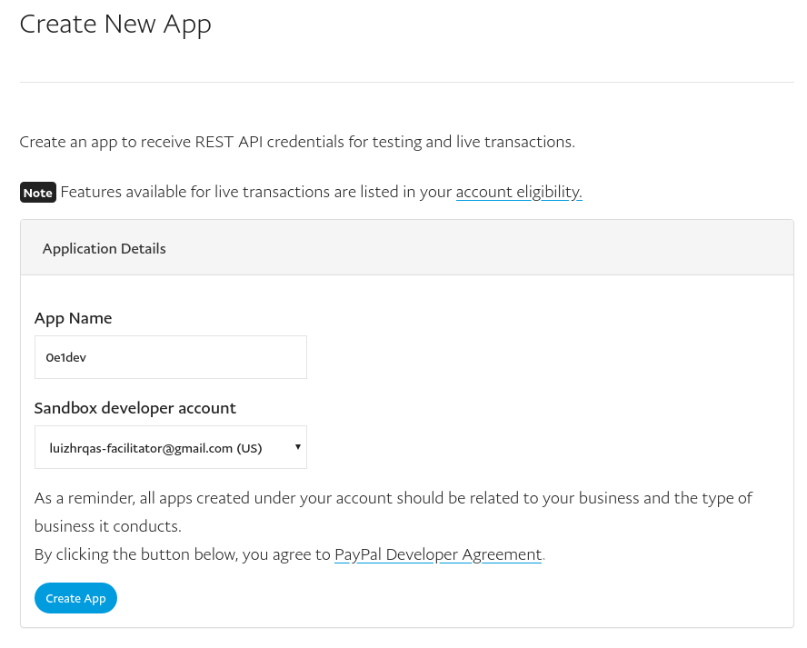 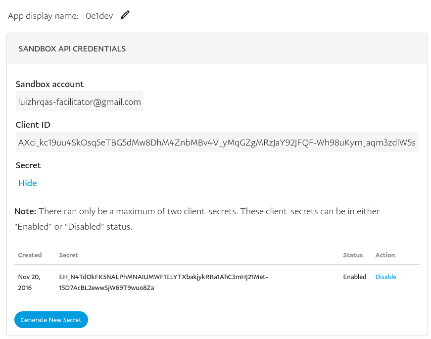
5) Guarde o Client ID e o Secret. Precisa clicar em Show para ver o Secret Key.
Com nosso token em mãos, vamos seguir para o próximo tópico…
Instalando SDK
Para este tópico, iremos trabalhar com o Composer. Tem como instalar sem ele, mas se você ainda não usa o Composer em pleno 2016, desista agora da nossa carreira.
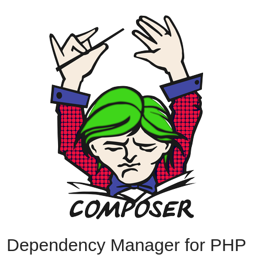
1) Crie uma pasta para nosso projeto;
mkdir pagamentos-recorrentes-com-paypal
2) Dentro desta pasta, inicialize o repositório Git;
git init
3) Agora, inicialize o Composer;
composer init
3.1) Confirme as informações apertando enter, quando ele perguntar a respeito das Dependências responda “no” para tudo.
4) Agora, vamos adicionar a SDK do PayPal como dependência:
composer require "paypal/rest-api-sdk-php:*"
Esta etapa pode demorar alguns minutos.
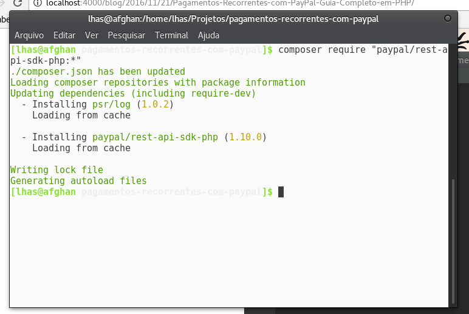
Agora que temos a faca e o queijo na mão, vamos programar de verdade.
Vamos fazer da maneira mais lúdica possível, pelo bem da simplicidade.
Crie um arquivo chamado checkout.php.
Agora, vamos chamar as dependências administradas pelo Composer:
<?php
require_once __DIR__ . '/vendor/autoload.php';
Vamos inserir nosso token de acesso:
// Lembrando de substituir o Client ID e o Client Secret abaixo
$apiContext = new \PayPal\Rest\ApiContext(
new \PayPal\Auth\OAuthTokenCredential(
'AYSq3RDGsmBLJE-otTkBtM-jBRd1TCQwFf9RGfwddNXWz0uFU9ztymylOhRS', // ClientID
'EGnHDxD_qRPdaLdZz8iCr8N7_MzF-YHPTkjs6NKYQvQSBngp4PTTVWkPZRbL' // ClientSecret
)
);
Lembre-se de substituir as duas chaves acima com o Client ID e Secret Key que nós pegamos no segundo tópico, Tokens de Acesso.
Pronto! Nós já estamos nos conectando com a API do PayPal. O token só será validado ao executar alguma requisição mas a príncipio já estamos com parte do caminho andado.
Vamos para a próxima etapa que é…
Definindo nossos modelos de cobrança
Antes de começarmos este tópico, gostaria de fazer uma explicação bem objetiva de como funciona esta arquitetura que iremos trabalhar.

Não tem muito mistério:
1) Acessamos a API com tokens adquiridos pelo OAuth; 2) Criamos um Billing Plan caso ainda não tenha criado(plano de cobrança), que descreve coisas como preço, periodicidade (diário, semanal, mensal), duração do ciclo (durante 6 meses, 12 meses, infinito); 3) Criamos um Billing Agreement e relacionamos ele com nosso usuário; 4) Redirecionamos usuário para o Paypal, onde ele efetuará o pagamento; 5) Nosso sistema será notificado sobre atrazualições através dos Webhooks (se o pagamento foi aprovado, recusado, cancelado, etc);
Voltando ao código, após importarmos as nossas dependências do Composer, vamos precisar importar explícitamente as classes que iremos trabalhar.
Para isto, basta:
use PayPal\Api\ChargeModel;
use PayPal\Api\Currency;
use PayPal\Api\MerchantPreferences;
use PayPal\Api\PaymentDefinition;
use PayPal\Api\Patch;
use PayPal\Api\PatchRequest;
use PayPal\Api\Plan;
use PayPal\Common\PayPalModel;
Vamos criar uma função que gere o plano:
function createPlan($apiContext, $name, $description, $frequency, $frequencyInterval, $cycles, $amountValue, $amountCurrency) {
}
Nossos parâmetros nesta função são:
- $apiContext: Passa nossa conexão com a API;
- $name: Definirá o nome do nosso plano;
- $description: Resumo rápido que irá aparecer na tela de Checkout do Paypal;
- $frequency: Frequencia do plano: Mensal, semanal, diária, etc;
- $frequencyInterval: Intervalo da frequencia: a cada 1 mes, a cada 1 semana, a cada 1 dia, etc;
- $amountValue: Valor total que será cobrado no plano
- $amountCurrency: Moeda que será usada no valor total do plano
PS: Uma boa prática de programação é não exceder 4 parâmetros em um método. Como é apenas um tutorial, botamos mais, mas o ideal aqui seria usar um array com as configurações extras.
Com os nossos parâmetros, vamos efetuar o código necessário para criar um plano:
function createPlan($apiContext, $name, $description, $frequency, $frequencyInterval, $cycles, $amountValue, $amountCurrency) {
// Definições de pagamento
$paymentDefinition = new PaymentDefinition();
$paymentDefinition->setName('Regular Payments')
->setType('REGULAR')
->setFrequency($frequency)
->setFrequencyInterval($frequencyInterval)
->setCycles($cycles)
->setAmount(new Currency(array('value' => $amountValue, 'currency' => $amountCurrency)));
// Definições do plano
$plan = new Plan();
$plan->setName($name)
->setDescription($description)
->setType('fixed');
// Relaciona plano com definições de pagamento
$plan->setPaymentDefinitions(array($paymentDefinition));
// Define algumas configurações de vendedor
$plan = setMerchantPreferences($plan, 'http://localhost/pagamentos-recorrentes-com-paypal');
// Retorna o objeto do plano
return $plan;
}
Na linha 23, rodamos uma outra função chamada setMerchantPreferences(). Nós ainda não criamos ela. Vamos criá-la agora:
function setMerchantPreferences($plan, $baseUrl, $returnUrl = '/ExecuteAgreement.php?success=true', $cancelUrl = '/ExecuteAgreement.php?success=false') {
$merchantPreferences = new MerchantPreferences();
$merchantPreferences->setReturnUrl($baseUrl . $returnUrl)
->setCancelUrl($baseUrl . $cancelUrl)
->setAutoBillAmount("yes")
->setInitialFailAmountAction("CONTINUE")
->setMaxFailAttempts("0");
$plan->setMerchantPreferences($merchantPreferences);
return $plan;
}
Pronto! Para nós criarmos nosso plano, precisamos das seguintes etapas:
1) Criar um objeto PaymentDefinition; 2) Configurar o PaymentDefinition com preço, duração, ciclo, etc; 3) Criar um objeto Plan; 4) Configurar o Plan; 5) Relacionar o Plan com o PaymentDefinition; 6) Definir as MerchantPreferences (URL de retorno com sucesso/falha) do plano.
Agora que já conseguimos criar planos, vamos criar um chamado User Premium Plan, que será usado para transformar nossos simples usuários em usuários PREMIUM!
// Criamos um plano chamado "User Premium Plan".
// Este plano será cobrado a cada 1 ($frequencyInterval) mês ($frequency) durante 12 meses ($cycles)
// com um preço de R$ 50 ($amountCurrency e $amountValue).
$userPremiumPlan = createPlan($apiContext, 'User Premium Plan', 'A premium plan for our users on 0e1dev.com', 'Month', '1', '12', 50, 'BRL');
Após nós criarmos nosso plano, vamos precisar ativá-lo. É uma burocracia idiota do PayPal, afinal, o plano já poderia vir ativado, não? Whatever, sou apenas um programador cheio de incertezas, provavelmente tem um motivo para ser assim (?).

Ativando o plano
Nossa função se resume a:
function activatePlan($apiContext, $plan) {
$patch = new Patch();
$value = new PayPalModel('{
"state":"ACTIVE"
}');
$patch->setOp('replace')
->setPath('/')
->setValue($value);
$patchRequest = new PatchRequest();
$patchRequest->addPatch($patch);
$plan->update($patchRequest, $apiContext);
return Plan::get($plan->getId(), $apiContext);
}
O lance de Patch/PatchRequest é uma abstração necessária para efetuar a comunicação com a API através do cURL. Eles poderiam deixar isto dentro do $plan->update(), mas novamente foda-se.
Após atualizar o plano, retornamos o nosso objeto Plan, limpo, atualizado, e o mais importante, ativado.
Se o plano NÃO estiver ativado, a assinatura NÃO vai funcionar.
Observação
É interessante que num código que vá para produção, esta etapa de plano seja efetuada apenas uma vez. Nas vezes seguintes, o ideal é que o sistema armazene o ID do plano. Eu não sei no que pode impactar você criar um plano novo toda vez que for fazer uma nova assinatura, mas esta é uma recomendação que encontra-se disponível diretamente na documentação oficial da SDK deles.

Criando a assinatura
Agora que temos um plano cadastrado e ativado na API, podemos finalmente fazer a assinatura.
function createAgreement($apiContext, $createdPlan) {
$agreement = new Agreement();
$agreement->setName('Assinatura para Plano User Premium')
->setDescription('Assinatura para Plano User Premium')
->setStartDate('2019-06-17T9:45:04Z');
$plan = new Plan();
$plan->setId($createdPlan->getId());
$agreement->setPlan($plan);
$payer = new Payer();
$payer->setPaymentMethod('paypal');
$agreement->setPayer($payer);
return $agreement->create($apiContext);
}
Sem muito mistério aqui. Criamos um objeto Agreement, configuramos ele com algumas infos básicas, definimos qual plano esta assinatura irá usar, e o método de pagamento, que é dentro do próprio Paypal.
Se sua conta tiver autorização para efetuar checkout transparente, isto é, pagamento na mesma página da sua app, nesta etapa ao invés do paymentmethod ser paypal ele seria credit_card.

Até aqui, nós já conseguimos fazer todas as etapas necessárias para nossa integração:
1) Criamos um plano e ativamos ele; 2) Criamos uma assinatura e ativamos ela; 3) Relacionamos o plano com a assinatura.
Se você debugar o que retorna desta nossa nova função createAgreement(), verá que ele tem um approval_url, que já é a nossa URL final para o usuário poder efetuar o pagamento dentro do Paypal. Mas aqui nós iremos além disto, além de redirecioná-lo, vamos fazer o retorno automático destes pagamentos, além de ativá-lo para o modo de produção. Keep watching!
Redirecionando usuário
Vamos usar um simples helper para isto:
function redirectUser($url) {
header('Location: ' . $url);
}
No fim nosso código de checkout ficará assim:
$apiContext = new \PayPal\Rest\ApiContext(
new \PayPal\Auth\OAuthTokenCredential(
'AXci_kc19uu4SkOsq5eTBG5dMw8DhM4ZnbMBv4V_yMqGZgMRzJaY92JFQF-Wh98uKyrn_aqm3zdlW5sb', // ClientID
'EH_N4TdOkFK5NALPhMNAIUMWF1ELYTXbakjykRRa1AhC3mHJ21Met-15D7AcBL2ewwSjW69T9wuo8Zay' // ClientSecret
)
);
// Criamos um plano chamado "User Premium".
// Este plano será cobrado a cada 1 ($frequencyInterval) mês ($frequency) durante 12 meses ($cycles)
// com um preço de R$ 50 ($amountCurrency e $amountValue).
$userPremiumPlan = createPlan($apiContext, 'User Premium Plan', 'A premium plan for our users on 0e1dev.com', 'Month', '1', '12', 50, 'BRL');
// Agora vamos ativar o plano
$userPremiumPlan = activatePlan($apiContext, $userPremiumPlan);
// Criamos a assinatura
$userPremiumAgreement = createAgreement($apiContext, $userPremiumPlan);
// Redirecionamos usuário para a página de pagamento
redirectUser($userPremiumAgreement->getApprovalLink());
Outra observação
Antes de redirecionar o usuário, é interessante que o seu sistema armazene o ID da Assinatura. Este ID é a única maneira do seu sistema identificar a quem se refere o pagamento quando nós configurarmos o Webhook.
Então este é o momento de criar uma migration, adicionar uma coluna chamada billing_agreement_id na nossa tabela de usuários (ou fazer uma nova tabela, fica a seu critério). O importante aqui é termos uma maneira de relacionar o pagamento (a assinatura na verdade) com o usuário.
Para recuperar o ID da assinatura, é muy simple:
// Criamos a assinatura
$userPremiumAgreement = createAgreement($apiContext, $userPremiumPlan);
// Recuperamos o ID da assinatura
$userPremiumAgreementID = $userPremiumAgreement->getId();
// Redirecionamos usuário para a página de pagamento
// redirectUser($userPremiumAgreement->getApprovalLink());
Checkout concluído!
Agora que nossa etapa de checkout está pronta, vamos fazer a etapa seguinte, que é a tela de pós-pagamento, em que nós vamos mostar uma mensagem de sucesso ou de erro, de acordo com o status do pagamento feito pelo usuário, ou caso ele tenha cancelado.
Para isto, crie o arquivo ExecuteAgreement.php.
O conteúdo dele será:
// Inclui as dependencias do Composer
require_once __DIR__ . '/vendor/autoload.php';
// Importa classe de Assinaturas
use PayPal\Api\Agreement;
// Nossas credenciais
$apiContext = new \PayPal\Rest\ApiContext(
new \PayPal\Auth\OAuthTokenCredential(
'AXci_kc19uu4SkOsq5eTBG5dMw8DhM4ZnbMBv4V_yMqGZgMRzJaY92JFQF-Wh98uKyrn_aqm3zdlW5sb', // ClientID
'EH_N4TdOkFK5NALPhMNAIUMWF1ELYTXbakjykRRa1AhC3mHJ21Met-15D7AcBL2ewwSjW69T9wuo8Zay' // ClientSecret
)
);
// Se o status for igual a sucesso, significa que usuário efetuou pagamento sem problemas
if (isset($_GET['success']) && $_GET['success'] == 'true') {
var_dump('Usuário efetuou o pagamento com sucesso.');
// Recupera o token e faz a assinatura começar a rodar (executa ela)
// a partir daqui ela começará a contar
$token = $_GET['token'];
$agreement = new Agreement();
try {
$agreement->execute($token, $apiContext);
} catch (Exception $ex) {
exit(1);
}
// Recupera os dados da assinatura e exibe ele (apenas para testes)
$agreement = Agreement::get($agreement->getId(), $apiContext);
var_dump($agreement);
} else {
var_dump('Usuário cancelou pagamento/não conseguiu pagar.');
}
O código é auto-explicativo. Se o usuário tiver pago, executamos a assinatura, para ela começar a contar, do contrário, não fazemos nada. Podemos exibir uma mensagem de alerta indicando que ocorreu um problema ao efetuar o pagamento do usuário.
Testando nossa aplicação
Temos o checkout, temos a página pós-checkout.
Já podemos testar, certo? Certo!
Para isto, abra a página checkout.php no seu navegador.
Após alguns segundos, o resultado será mais ou menos igual a este:
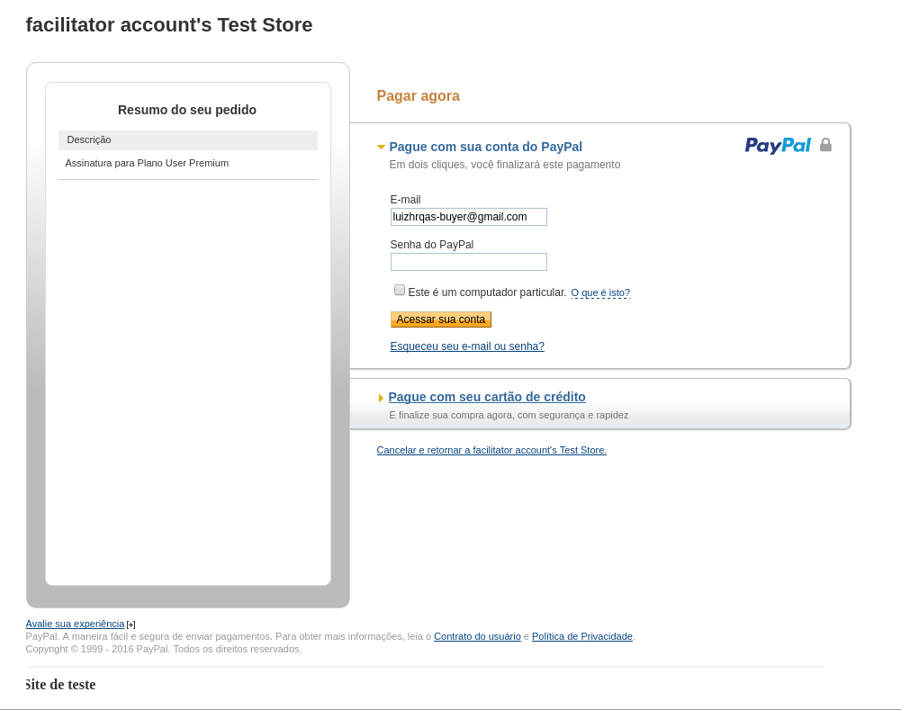
Mas e agora? Vou ter que usar meu cartão de crédito para testar, @lhas?
Nãããão!!!!!
Por padrão, as apps no Paypal vem em modo Sandbox. Graças a este modo, podemos criar contas “de mentirinha”. Através destas contas, temos cartões de crédito “de mentirinha”. Com esta integração, você pode validar se a sua aplicação está executando tudo corretamente, repetindo as etapas de um usuário final pagando a sua aplicação.
Para você ter o usuário e senha desta conta de Sandbox, vá aqui. Você precisa estar logado no Console do Paypal.
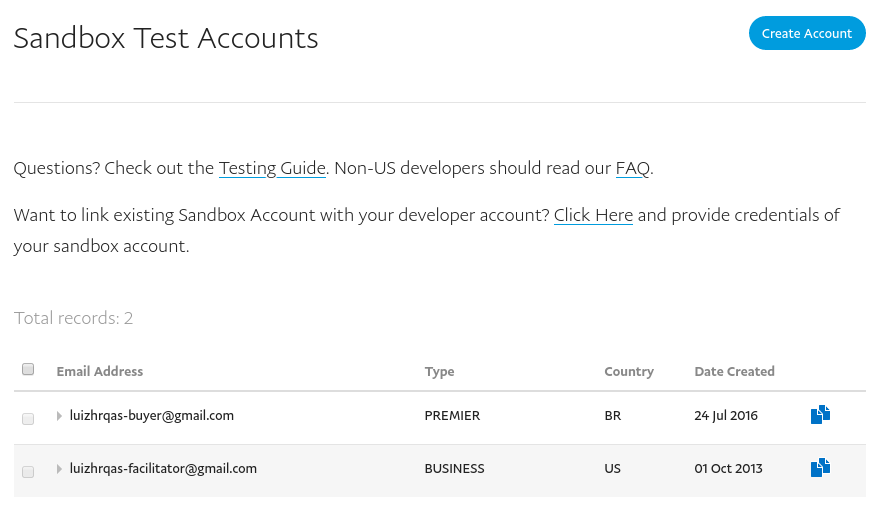
Você deverá ter 2 registros igual a imagem abaixo, um é o Buyer e o outro Facilitator. O Facilitator é o dono da loja, que receberá o pagamento. O Buyer é obviamente nosso usuário pagador. Clique no Buyer então. Depois em Profile. Deverá abrir uma modal igual a esta:
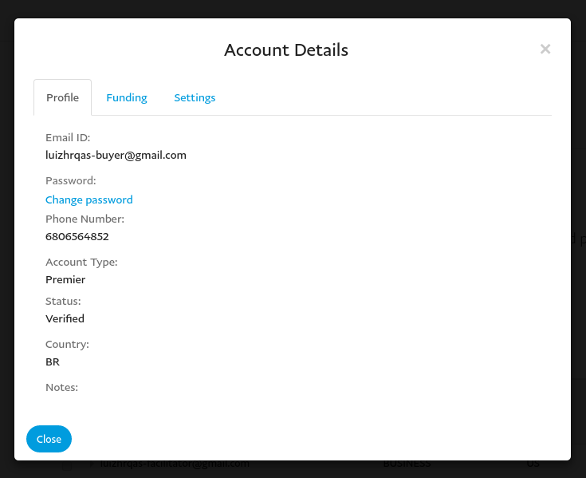
Para definir a senha da conta de teste, clique em Change Password.
Após isto, vá na aba Funding.
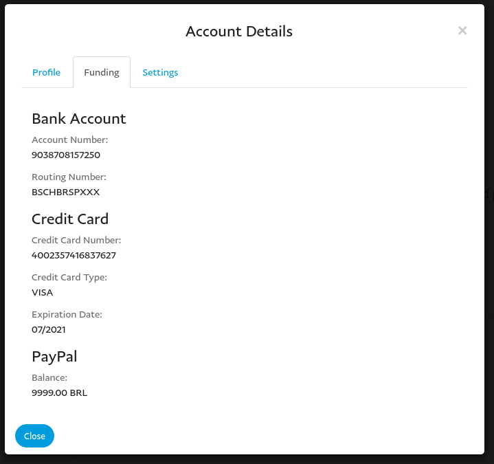
Tela auto-explicativa, não? Teu cartão de mentira, junto com teu saldo de mentira.
Volta para nossa tela de checkout, autentique-se com o e-mail do Buyer e a nova senha que você definiu anteriormente. Após isto, o pagamento será concluído e você verá as seguintes telas:
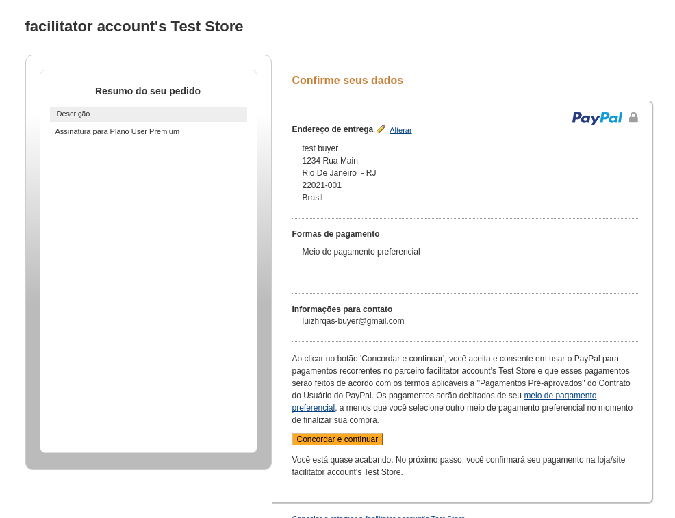
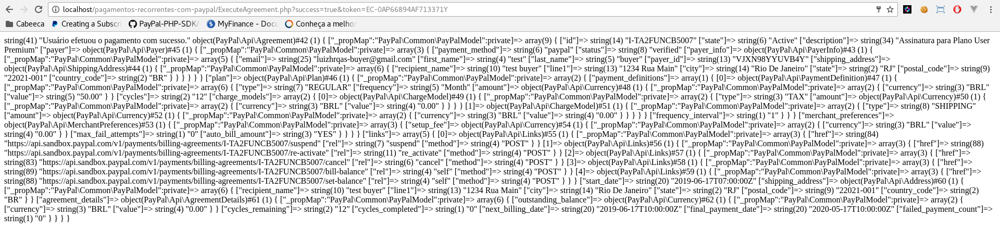
Parabéns, filho da puta!
Você conseguiu. Você vai ficar rico agora.

Mas antes de comemorar, falta um grande detalhe.
Precisamos que nosso sistema seja notificado quando o pagamento do usuário for efetuado/cancelado.
Imagine a seguinte situação:
- Lucas é estagiário de Direito.
- Lucas entra no site da Academia XYZ.
- *Lucas se inscreve com o plano básico mensal de 100 reais.*
- *Lucas paga o primeiro mês do plano básico.*
- *Lucas paga o segundo mês do plano básico.*
- No terceiro mês, Lucas tem o contrato de estágio finalizado, e logo fica desempregado.
- Por estar desempregado, ele não pode pagar o cartão de crédito, então cancela ele.
- Quando chega a data de cobrança do Paypal, o mesmo tenta cobrar aquele cartão que está no histórico deles.
- *Como o Paypal não conseguirá efetuar a cobrança, a assinatura do Lucas ficará em um status de RECUSADO.*
A Academia XYZ precisa saber que a assinatura do Lucas passou de ATIVA para RECUSADA.
E a a Academia XYZ saberá destá informação através dos…
Configurando Webhooks
Volte para a tela de Dashboard do Paypal.
Clique no App que você criou no começo do tutorial.
Você verá um bloco chamado “SANDBOX WEBHOOKS”.
Clique em “Add Webhook”.
Em “Webhook URL”, coloque uma URL acessível pela internet. Ou seja, aqui não podemos usar Localhost, e sim um link válido. Eu botei https://0e1dev.com/clients/paypal/webhook.php
Observação ultra importante
Você só pode configurar um webhook para uma URL com HTTPS. Ou seja, caso sua aplicação ainda não tenha um certificado SSL, ela não poderá ter o retorno automático configurado.
Em “Event types”, como tem muitas opções, marque “All events”. Se você quiser algo mais específico, selecione.
Agora, crie um arquivo chamado webhook.php.
No conteúdo dele, caso você queira aprender sobre cada evento disparado numa típica transação no Paypal, use o seguinte código:
<?php
$file_handle = fopen('post.log', 'a+');
fwrite($file_handle, print_r($_POST,true));
fwrite($file_handle, file_get_contents('php://input'));
fclose($file_handle);
Isso fará com que todo conteúdo recebido pelo Webhook (vem diretamente do canal POST), seja armazenado em um arquivo chamado post.log.
Testando o webhook
Caso você queira testar o que cada evento faz, você pode:
a) Fazer todo o procedimento de checkout manualmente com a conta no modo Sandbox; b) Usar o Webhook Simulator. Clique aqui.
Mesmo o Simulator vai precisar de uma URL com HTTPS.
Saindo do modo Sandbox para Produção
Quando você configurar o Webhook do jeito que você quer, a sua aplicação está finalizada para finalmente ir para o ambiente de produção.
Quando chegar esta hora, você vai precisar fazer uma alteração no seu código.
O token de produção é diferente do de Sandbox. As configurações de Webhook também são separadas. Para conseguir ver estas configurações do modo de produção (eles chamam de Live), você tem que ir na Dashboard, selecionar o aplicativo que você criou, e no botão a direita, clicar em “Live”:
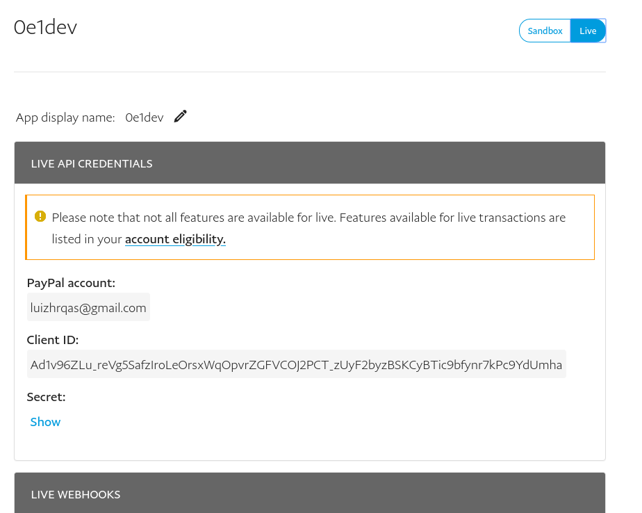
Pronto, aqui estará suas credenciais de acesso e as configurações de Webhook para produção. Cadastre seu webhook novamente e bons negócios! :-)
Código-fonte
O código fonte deste tutorial encontra-se no GitHub.
Agradecimento
Obrigado a quem leu até aqui.
Keep it real.